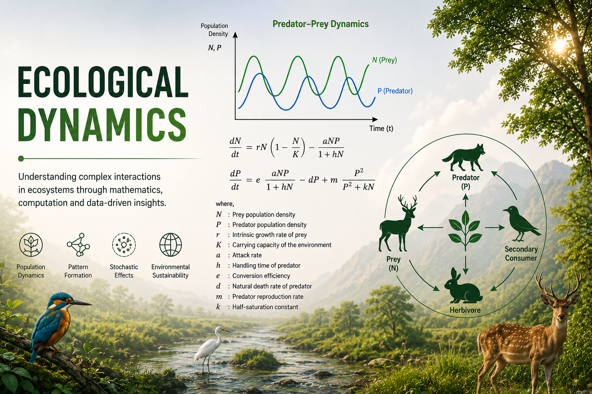
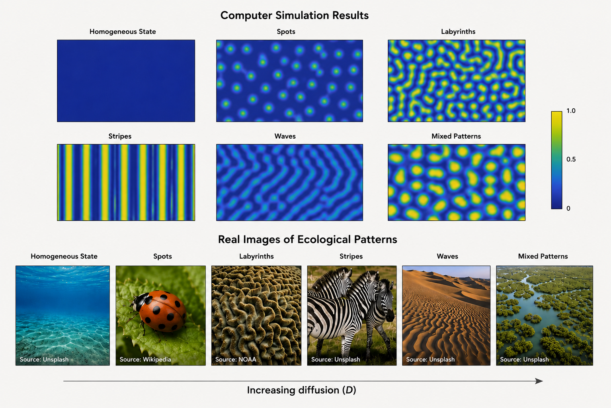

Ecological dynamics investigates the complex interactions among species, their environments, and external perturbations through mathematical and computational approaches. This research focuses on nonlinear ecological systems involving predator-prey interactions, pattern formation, stochastic effects, Allee dynamics, nonlocal interactions, and ecosystem resilience. These studies aim to understand how spatial heterogeneity, diffusion, environmental fluctuations, and behavioral responses shape ecological stability and biodiversity.
A significant part of this research addresses spatio-temporal ecological models, where reaction-diffusion systems are used to investigate pattern formation, wave propagation, and bifurcation behavior. Special emphasis is placed on understanding Turing instability, self-organization, and nonequilibrium ecological transitions. The research also explores semiarid ecosystems, ecological sustainability, and adaptive defensive mechanisms in prey populations.

The study of nonlocal prey-predator interactions demonstrated how spatial kernels modify ecological patterns and stability properties. Research on stochastic ecological systems revealed that demographic noise can induce oscillations and complex spatio-temporal behavior, even in systems that do not exhibit deterministic pattern formation. Recent studies also investigate ecological sustainability in semiarid regions, highlighting the role of soil surface interactions and environmental variability.
